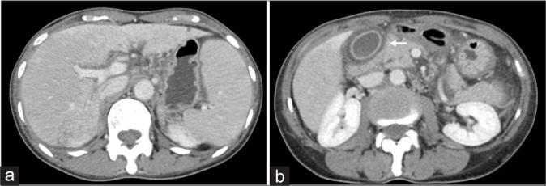
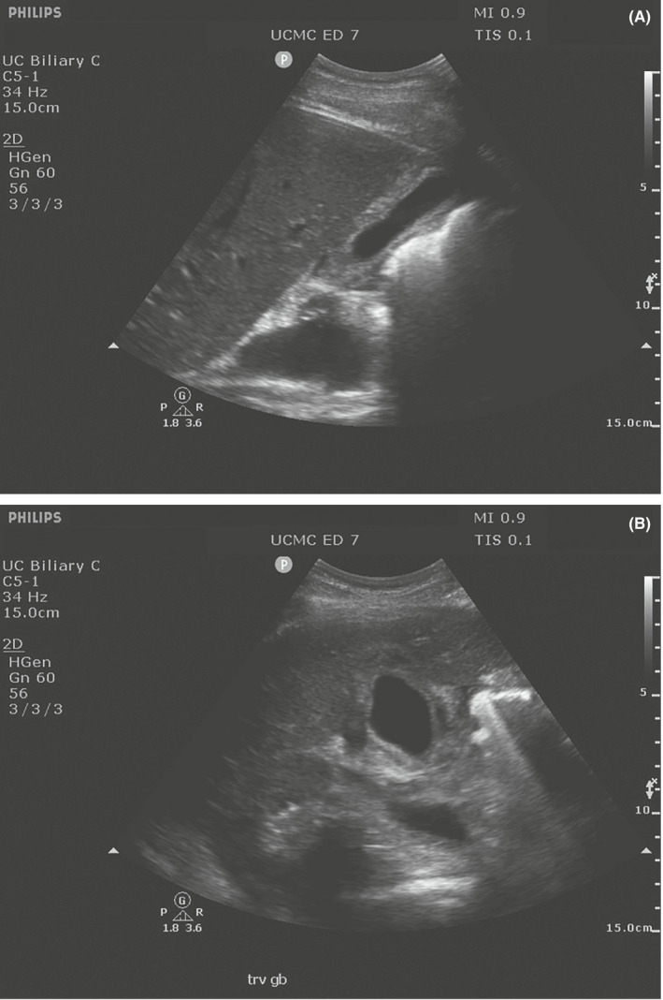

1790 — Bùng phát viêm gan B khi điều trị ung thư vú / HBV reactivation during breast cancer therapy
Tags: pattern:tang-transaminase pattern:viem-gan pattern:gan-nhiem-mo vung:gan score:R-factor protocol:HBV-DNA protocol:SA-gan protocol:CT-gan
Mức chắc chắn (certainty): tổng hợp y văn (literature synthesis) — ngưỡng chẩn đoán/ dự phòng theo AASLD 2018 và các hướng dẫn HBV reactivation; hình ảnh minh họa từ hai bài open-access (PMC12361689, PMC9400034). Không phải ca nguyên văn của một bệnh nhân duy nhất.
1. Tổng quan bệnh học – cơ chế hình ảnh
- Bùng phát viêm gan B (HBV reactivation) là sự tăng sao chép HBV khi miễn dịch bị ức chế (hóa trị, corticoid, anti-CD20, ức chế điểm kiểm soát), sau đó hệ miễn dịch phục hồi tấn công tế bào gan nhiễm virus → viêm gan, có thể suy gan cấp và tử vong.
- Định nghĩa định lượng (AASLD 2018):
- Ở người HBsAg+: HBV DNA tăng ≥ 2 log10 (100 lần) so với nền, hoặc HBV DNA xuất hiện lại nếu trước đó không đo được.
- Ở người anti-HBc+ / HBsAg− (nhiễm đã khỏi): HBsAg dương trở lại hoặc HBV DNA dương.
- Đợt bùng phát viêm gan (hepatitis flare): ALT ≥ 3 lần nền và > 100 U/L.
- Vì sao ung thư vú là bối cảnh điển hình: phác đồ anthracycline + cyclophosphamide ± taxane là nhóm nguy cơ trung bình (1–10%); thêm corticoid liều cao kéo dài hoặc anti-CD20 (nếu điều trị lymphoma kèm) đẩy lên nguy cơ cao (> 10%). Không dự phòng, 20–50% người HBsAg+ bùng phát; tử vong 5–40% khi đã suy gan.
- Vì sao hình ảnh quan trọng nhưng không chẩn đoán được một mình: bùng phát HBV là bệnh của xét nghiệm (HBV DNA, ALT, bilirubin, INR). Hình ảnh có ba việc: (1) loại tiến triển u/di căn gan mới, (2) loại tắc mật (giãn đường mật, sỏi, hẹp), (3) nhận diện tổn thương gan do thuốc (SOS, gan nhiễm mỡ, pseudocirrhosis).
- TẠI SAO có phù khoảng cửa (periportal edema) trên CT: viêm gan cấp làm dịch thấm vào mô liên kết quanh khoảng cửa; nước có HU thấp (~0–20 HU) so với nhu mô gan bình thường 50–65 HU không cản quang → dải giảm đậm hình ống/chữ Y men theo tĩnh mạch cửa. Trên MRI, dịch này T1 tối – T2 sáng; trên siêu âm, mô kẽ phù làm tăng hồi âm quanh khoảng cửa và thành túi mật dày.
- TẠI SAO thành túi mật dày ("double wall sign"): phù lớp dưới niêm mạc tạo một dải giảm âm kẹp giữa niêm mạc tăng âm và thanh mạc tăng âm; thành túi mật bình thường ≤ 3 mm, khi viêm gan cấp thường > 3 mm nhưng không có sỏi và không đau điểm Murphy — đây là điểm phân biệt với viêm túi mật.
- Ngưỡng hình ảnh định lượng: gan bình thường 50–65 HU không cản quang; gan nhiễm mỡ < 40 HU (hoặc chênh gan–lách < −10 HU**); thành túi mật **> 3 mm; đường mật trong gan > 2 mm ở người không cắt túi mật được coi là giãn. Độ cứng gan (LSM) tăng giả lập trong viêm gan cấp — không dùng elastography để phân độ xơ trong đợt bùng phát, chờ ≥ 3–6 tháng sau khi ALT về bình thường.
2. Mẫu hình + chẩn đoán phân biệt theo vị trí (gamut)
- Tổn thương lan tỏa nhu mô gan (diffuse): bùng phát HBV, tổn thương gan do thuốc (DILI), hội chứng tắc xoang gan (SOS/VOD), gan nhiễm mỡ do hóa trị, pseudocirrhosis, ứ mật do thuốc.
- Tổn thương khu trú (focal): di căn gan mới/to ra, áp-xe gan, HCC (nếu nền xơ gan), nang/nhiễm trùng cơ hội.
- Theo vị trí: quanh khoảng cửa (phù khoảng cửa, giãn đường mật), dưới bao (tụ máu, di căn dưới bao), túi mật (dày thành, ứ mật), quanh tĩnh mạch cửa (huyết khối cửa nhiễm khuẩn).
- Mnemonic 4 nhóm sau hóa trị: Drug (DILI), Virus (HBV flare), Tumor (progression), Vascular (SOS/pseudocirrhosis) — DVT-V dễ nhớ trong bối cảnh bệnh nhân ung thư vú đang hóa trị.
3. Bảng so sánh phân biệt (ma trận đối chiếu)
| Thực thể (entity) | Hình ảnh điển hình | Chốt vào (rule-in) | Chốt loại (rule-out) | Gợi ý xác nhận |
|---|---|---|---|---|
| Bùng phát HBV | Gan to nhẹ, phù khoảng cửa, thành túi mật dày, nhu mô không đồng nhất; không có tổn thương khu trú mới | HBV DNA tăng ≥ 2 log10 hoặc dương lại + ALT ≥ 3× nền và > 100 U/L | Không có bằng chứng virus → không gọi bùng phát HBV dù ALT tăng | HBsAg, anti-HBc, HBV DNA, ALT/bilirubin/INR mỗi 1–3 tháng |
| DILI (tổn thương gan do thuốc) | Gan to, có thể mỡ hóa, phù khoảng cửa; hình ảnh giống hệt viêm gan virus | R ratio ≥ 5 (tế bào gan), thời gian khớp thuốc, loại trừ virus/tắc mật | Virus âm và R ≤ 2 (ứ mật) → nghĩ nguyên nhân khác | R = (ALT/ULN)/(ALP/ULN); Hy's law nếu ALT ≥ 3× ULN + bilirubin ≥ 2× ULN |
| Tiến triển u/di căn gan | Tổn thương khu trú mới/to ra, bờ không đều, ngấm thuốc kiểu u | Nốt mới hoặc tăng kích thước theo RECIST | Chỉ phù lan tỏa, không nốt mới → không phải tiến triển | CT/MRI có cản quang; so phim cũ; PET/CT nếu còn nghi |
| SOS/VOD sau hóa trị | Gan to, phù quanh túi mật, cổ trướng, phù khoảng cửa; tĩnh mạch cửa giảm phổ | Cổ trướng + gan to + bilirubin tăng sau oxaliplatin/hóa trị | Không cổ trướng, không tăng bilirubin → ít nghĩ SOS | Doppler cửa, CT 3 thì, đo gradient áp lực gan–tĩnh mạch nếu cần |
| Tắc mật do sỏi/hẹp | Giãn đường mật trong gan, dấu "double duct" nếu giãn ống tụy | Đường mật giãn + ALP/GGT tăng trội | Đường mật không giãn → loại tắc mật lớn | Siêu âm + MRCP; ERCP nếu cần |
| Gan nhiễm mỡ do hóa trị | Gan giảm đậm lan tỏa (< 40 HU), đôi khi khu trú | HU gan < 40 hoặc chênh gan–lách < −10 HU | Không giảm đậm → không phải mỡ | CT không cản quang + MRI out-of-phase |
| Pseudocirrhosis | Bờ gan lobulated, teo thùy, cổ trướng, hạch rốn gan — giống xơ gan | Tiền sử di căn gan + hóa trị, bờ gan biến dạng tiến triển | Bờ gan nhẵn, không teo thùy → không pseudocirrhosis | So chuỗi CT; MRI; không chẩn đoán xơ gan chỉ bằng hình thái |

(a) CT thì tĩnh mạch cửa: phù khoảng cửa (dải giảm đậm men theo nhánh cửa) và nhu mô gan không đồng nhất; (b) phù thành túi mật (mũi tên trắng mảnh). Bối cảnh: ung thư vú di căn gan đang paclitaxel + carboplatin, men gan xấu dần. Nguồn: Journal of Clinical Imaging Science 2025 (PMC12361689), CC BY-NC-SA 4.0.
Siêu âm túi mật: (A) mặt cắt dọc, thành dày, không sỏi; (B) mặt cắt ngang, "double wall sign" — dải giảm âm dưới niêm mạc kẹp giữa hai lớp tăng âm. Nguồn: Clinical Case Reports 2022 (PMC9400034), CC BY 4.0.4. Protocol chụp + hệ phân độ/điểm chuẩn hóa
- Trước khi bắt đầu hóa trị (bắt buộc): HBsAg + anti-HBc (± anti-HBs) cho mọi bệnh nhân ung thư vú sắp hóa trị/ức chế miễn dịch; nếu HBsAg+ hoặc anti-HBc+ → HBV DNA nền.
- Phân tầng nguy cơ (AASLD 2018):
- Nguy cơ cao (> 10%): HBsAg+ dùng anti-CD20 hoặc ghép tế bào gốc.
- Trung bình (1–10%): HBsAg+ dùng hóa trị/ức chế miễn dịch khác (gồm phác đồ ung thư vú); anti-HBc+ dùng anti-CD20.
- Thấp (< 1%): anti-HBc+ dùng hóa trị không anti-CD20.
- Dự phòng kháng virus: nguy cơ cao/trung bình → tenofovir (TDF 300 mg/ngày hoặc TAF 25 mg/ngày) hoặc entecavir 0,5 mg/ngày, bắt đầu trước hoặc cùng lúc với ức chế miễn dịch; tiếp tục ≥ 6 tháng sau liều cuối, 12 tháng nếu anti-CD20. Dự phòng giảm bùng phát > 80%.
- Nếu không dự phòng (nguy cơ thấp): theo dõi HBV DNA + ALT mỗi 3 tháng trong và sau điều trị; khởi động kháng virus ngay khi HBV DNA dương/tăng ≥ 1 log10 — không chờ đến ngưỡng 2.000 IU/mL của viêm gan B mạn.
- Khi đã bùng phát: kháng virus ngay (tenofovir/entecavir), không trì hoãn vì chờ men gan giảm; xem xét ngừng thuốc gây độc nếu DILI là hàng phân biệt; theo dõi INR, bilirubin, encephalopathy để phát hiện suy gan cấp; hội chẩn gan–tiêu hóa.
- Hình ảnh: siêu âm gan + Doppler cửa là bước đầu (không bức xạ); CT 3 thì nếu nghi u/tiến triển/SOS; MRI gan có cản quang tế bào (gadoxetate) khi cần phân biệt nốt lành/ác. Không chụp tầm soát di căn chỉ vì ALT tăng.
- Elastography: hoãn đến khi ALT về bình thường ≥ 3 tháng (viêm làm LSM tăng giả lập).
flowchart TD
A[Ung thư vú sắp hóa trị] --> B[HBsAg + anti-HBc + anti-HBs]
B --> C{HBsAg dương}
C -->|Có| D[HBV DNA nền + dự phòng tenofovir/entecavir]
C -->|Không| E{anti-HBc dương}
E -->|Có| F{Nguy cơ trung bình-cao}
F -->|Có| D
F -->|Không| G[Theo dõi HBV DNA + ALT mỗi 3 tháng]
E -->|Không| H[Không cần theo dõi HBV]
D --> I[Tiếp tục 6 tháng sau liều cuối]
G --> J{HBV DNA dương hoặc ALT tăng}
J -->|Có| K[Khởi động kháng virus ngay]
J -->|Không| G
5. Biến thể bình thường và cạm bẫy
- Phù khoảng cửa nhẹ có thể gặp ở gan nhiễm mỡ, suy tim, truyền dịch nhiều — không đồng nghĩa viêm gan; phải đọc cùng xét nghiệm.
- Thành túi mật dày do suy tim, giảm albumin, cổ trướng, viêm túi mật — "double wall" chỉ gợi ý khi không sỏi, không Murphy, có viêm gan.
- ALT bình thường không loại trừ bùng phát HBV (đặc biệt khi đang dùng corticoid liều cao hoặc suy gan); hình ảnh bình thường cũng không loại trừ.
- Quy kết oan cho hóa trị: nếu chưa làm HBsAg/anti-HBc/HBV DNA, không được gọi "DILI" — bỏ sót HBV là nguyên nhân tử vong phòng được.
- Pseudocirrhosis giả xơ gan: bờ gan lobulated + teo thùy ở bệnh nhân di căn gan đang hóa trị không phải xơ gan thật; đừng gắn chẩn đoán xơ gan rồi loại bỏ cơ hội điều trị.
- Gan nhiễm mỡ làm giảm độ nhạy phát hiện nốt trên CT không cản quang; nốt di căn có thể "ẩn" trong gan mỡ — cần MRI/CEUS khi nghi.
- Cổ trướng + gan to sau oxaliplatin phải nghĩ SOS, không phải "tiến triển u" — sinh thiết gan có thể chảy máu, ưu tiên chẩn đoán hình ảnh + gradient áp lực.
6. Tự lượng giá — Blind Quiz ngay trên trang tĩnh
Ca 1 — Nữ ung thư vú di căn gan, đang paclitaxel + carboplatin, men gan xấu dần, không sốt.
- Câu hỏi: Hai dấu hiệu chính trên CT là gì? Ba chẩn đoán phân biệt? Xét nghiệm nào quyết định chẩn đoán?
Bấm để hiện đáp án (findings + chẩn đoán)
- Findings: (a) phù khoảng cửa — dải giảm đậm men theo nhánh tĩnh mạch cửa — và nhu mô gan không đồng nhất; (b) dày thành túi mật (mũi tên trắng).
- Chẩn đoán: viêm gan do hóa trị (chemotherapy-related hepatitis), nhưng phải loại bùng phát HBV trước khi quy kết thuốc.
- Xét nghiệm quyết định: HBV DNA + HBsAg/anti-HBc, ALT/bilirubin/INR; R ratio để phân biệt DILI tế bào gan vs ứ mật.
- Nguồn: Journal of Clinical Imaging Science 2025 (PMC12361689), CC BY-NC-SA 4.0.
Ca 2 — Bệnh nhân đau hạ sườn phải nhẹ, men gan tăng, siêu âm túi mật không sỏi.
- Câu hỏi: Dấu hiệu "double wall" là gì? Phân biệt với viêm túi mật cấp bằng gì? Liên hệ với viêm gan cấp thế nào?
Bấm để hiện đáp án (findings + chẩn đoán)
- Findings: thành túi mật dày > 3 mm, không sỏi, dải giảm âm dưới niêm mạc kẹp giữa hai lớp tăng âm (double wall sign).
- Chẩn đoán: phù thành túi mật trong viêm gan cấp (ở đây là viêm gan cấp — cần xét nghiệm virus/độc chất).
- Phân biệt: viêm túi mật cấp có sỏi/kẹt cổ túi, Murphy dương, thành dày không đều, dịch quanh túi; double wall đơn thuần + men gan tăng → nghĩ viêm gan.
- Nguồn: Clinical Case Reports 2022 (PMC9400034), CC BY 4.0.
Câu 3 — Bệnh nhân ung thư vú HBsAg+, phác đồ anthracycline, chưa có HBV DNA. Xử trí?
Bấm để hiện đáp án
- Không chờ HBV DNA để dự phòng: HBsAg+ + hóa trị nguy cơ trung bình → bắt đầu tenofovir hoặc entecavir ngay, trước/cùng lúc hóa trị, tiếp tục ≥ 6 tháng sau liều cuối.
- Xét nghiệm HBV DNA nền để theo dõi đáp ứng và phát hiện đột biến kháng thuốc; không dùng lamivudine vì tỷ lệ kháng cao.
Bài liên quan chéo
- 500 – Tổng quan Hệ Vú & Sản phụ khoa
- 100 – Tổng quan Hệ Bụng
- 1732 – Độc gan do CDK4/6 và thuốc ức chế miễn dịch
- 1791 – Ung thư vú ở nam giới
- 1918 – Nhiễm CMV sau ghép gan ở trẻ
Ảnh
images/1790_PMC12361689_fig7.jpg— viêm gan sau hóa trị ở bệnh nhân ung thư vú, Journal of Clinical Imaging Science 2025 (PMC12361689), CC BY-NC-SA 4.0 (nguyên bản, không crop/ghép).images/1790_PMC9400034_fig1.jpg— siêu âm túi mật trong viêm gan cấp, Clinical Case Reports 2022 (PMC9400034), CC BY 4.0.- Giấy phép từng ảnh:
images/CREDITS.md.
Không dùng để chẩn đoán độc lập khi chưa có người hướng dẫn.